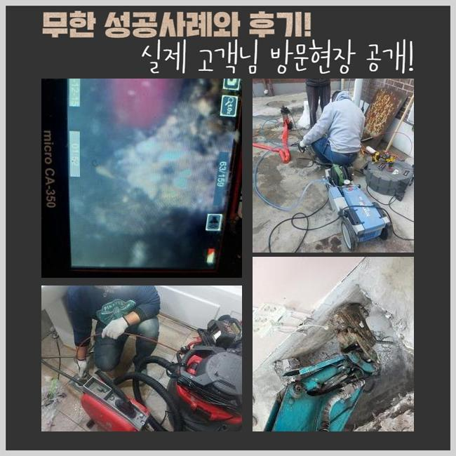
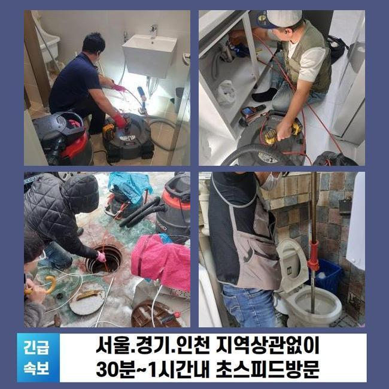
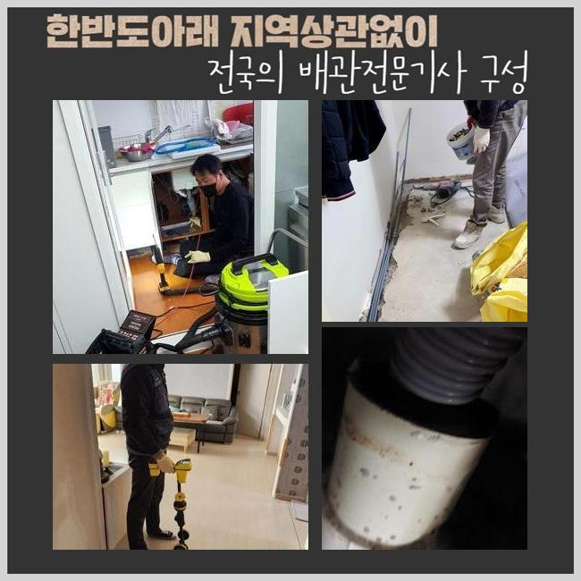
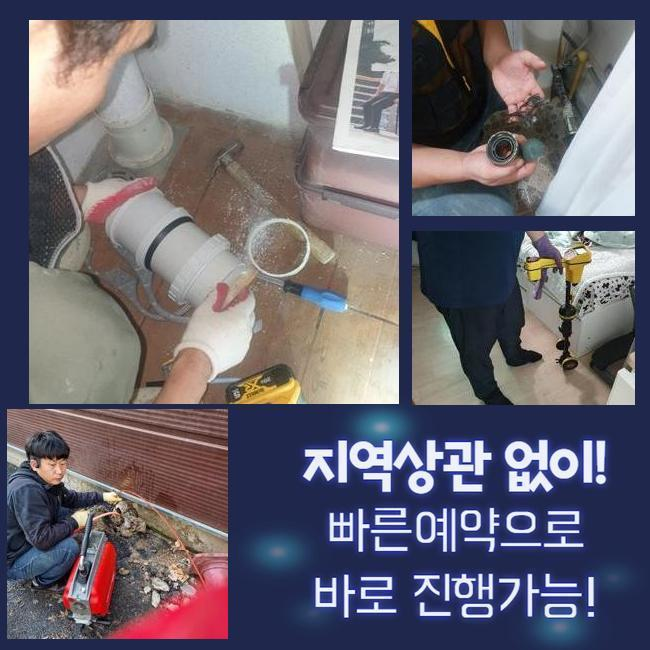
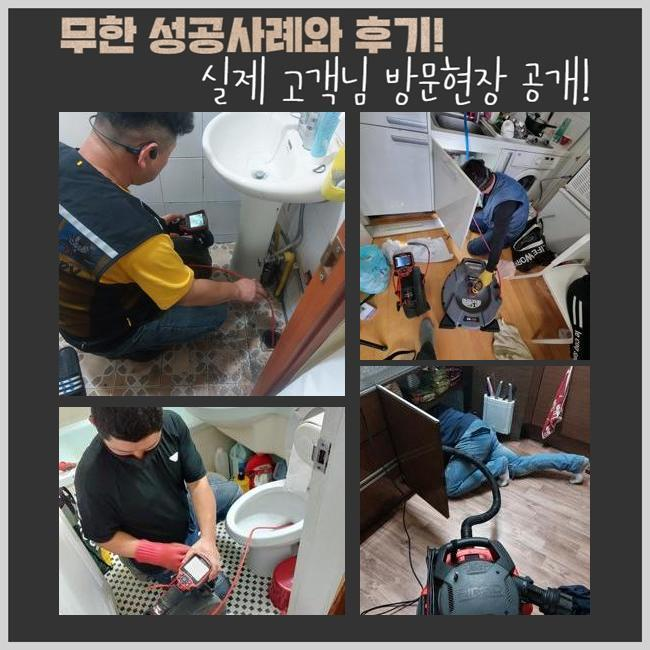
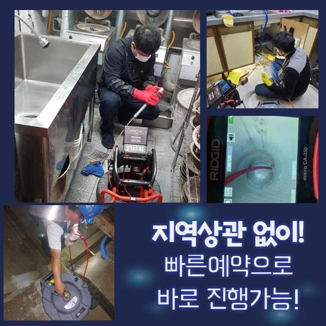

🏠 중구 필동대변기뚫음 태평로 배관내시경카메라 배관막힘누수
용인 변기막힘 전문 시공 후기

📋 작업 개요
- 위치: 용인
- 서비스 유형: 변기막힘, 하수구막힘, 배관막힘, 누수수리, 역류해결, 뚫는업체, 배관청소, 고압세척
- 작업 일시: 2024. 10. 21. 22:27
- 업체명: 하수구수사대 (010-5615-2118)
🔍 문제 상황
중구 필동대변기뚫음 태평로 배관내시경카메라 배관막힘누수
막히는 문제와 역류들이 갑자기 생기게되어 곤란함을 겪으신다는 의뢰로서 조속하게 방문을 드렸어요
건축물을 시공해줄 때에는 배수과정이 원활히 이뤄지도록 관로를 깔게됩니다
배수관은 매립시간들이 길어졌을 시 여러가지의 증세를 야기시킵니다
자주 발생되는 문제라면 막히게 되는것으로 내구성이 떨어지며 발생하게되는 잔해들이 누적된다거나 잔해들이 하수관으로 빠질 시 꺾여지는 부위에서 누적이 지속되며 막히는 문제들을 불러일으키죠
솟구치는 것처럼 증상들이 외부적으로 떠오른 경우일땐 안쪽엔 상당한 잔해들이 위치했을 가능성들이 높아서 전문가들의 손을 빌리는것이 실질적인 조치라 생각하시면 되는데요
설치시점이 장기간 도래했다면 내식성 이슈 발발의 확률이 높으며, 주변의 설비까지 노후들이 빨리 이어질 확률이 높습니다
방문드렸던 곳도 노후화가 진행되어 막힘들이 발생했을 여지가 높을 것으로 보았습니다

🔎 원인 분석
💡 전문가 진단: 정밀 진단 장비를 사용하여 슬러지의 고착 여부를 판명하고 타격/세척 작업을 실시했습니다.
고객님의 경우 며칠전부터 배수과정이 온전히 이뤄지지 못하는 문제들을 확인했으나 신경쓸정도로 불편을 주진 못하겠다는 판단 하에 증상이 발생될때까지 조치를 안했다고 했죠
갑작스런 역류를 불거진 걸 마주한 뒤에야 빨리 저희전문진에게 문의하셨습니다
관련 피해들이 생겨나면 어떤 원인인지에 따라서 발생되는 현상들은 천차만별이죠
평소의 현장에선 제대로 된 조치가 행해지지 않을 시 해당위치에 쌓인 잔해들이 배수의 유수를 정체하게 하는 까닭들로 영향을 끼치며 솟구치는 증상도 동반시키게되죠
덧붙여 연결되는 쪽에 고착된 이물은 수도와 만나면 부패되는데 이를 기점으로 냄새들이 생기게 되며 위생까지 위협하게되는 요인들로 다가올거에요
그러므로 표면으로 피해들이 드러났다면 가볍지 않은 사안이라는 것을 아시고 바로 전문업체들의 해결책을 통할것을 권장드려요
세척들을 원하시면 저희업체는 내시경을 사용하여 설비들을 체크해보는 절차를 이행하고 있죠
내시경은 송출부와 연결되있으므로 두눈으로 볼수가 없는 관로들을 선명하게 체크해볼 수 있죠

🔧 작업 과정
모니터로 위치별로 세심히 체크해주면 해당 부위들을 정확히 짚어주어 작업들을 진행시킬 수 있죠
내시경은 배수장애들을 바로 잡고자 할 때 요구되는 기계인데 섣불리 판단하거나 번거로움에 넘어가버리는 현장도 간혹가다 목격되죠
진단 등을 생략하고 무작정 세척들을 진행시키면 근원이 되는 원인요소를 잔존하게하는 결과물을 불러일으킨다는 사실을 유념하시기 바라요!
통수시설과 연관된 설비들을 체크해보니 각 라인에는 예상보다 상당량의 이물들이 퇴적된 걸 확인하였어요
꺾이는 부분에는 뭉쳐서 돌과 같이 고착이 진행되고 있었고 벽라인에 흡착이 이뤄지게되며 배수의 단계들을 막아버리고 있었던 모습을 확인했습니다
세척관련 반경자체가 협소하다면 간단한 방법들을 써서 잔재들을 배출시켜 쉽게 증상들을 잠재우겠지만 오늘과같이 위치별로 세척들을 이행해주고자 하면 고압수청소 장비를 이용하여 긴 구간을 청소하는게 합리성까지 챙긴 방식이라 할 수 있습니다
고압노즐의 경우 라인에서 시작되는 물줄기들을 통해 이물을 제거하는 방식인데요 특수성분들을 섞지 않고 그저 수도를 이용하는 것이므로 세척과정이 일단락되고 물들을 쓰셔도 전혀 문제되지않는 위생 상 결함이 없는 절차에요
더 나아가 하수관을 깔아두었던 때와 큰 차이가 나지않도록 되돌려 필요치않은 하수구 증세들을 예방시켜주는 효능도 보이는데요
통수오류가 자주 생기는 상황일때는 전문인을 지속적으로 호출하여 이물질 파쇄 작업들을 수행하기보다는 1년 중에 한번은 고수압청소들을 진행해주는것이 합리적인 방식인걸 기억하시면 좋겠습니다
이곳의 경우 연결부분마다 잔해물들이 누적된 상태로서 적재적소 장비들을 삽입해 청소들을 진행했는데요
그 다음 장비들을 통해 입구쪽에 쌓인 잔해물들을 청소하고 약간 배수과정의 흐름이 트이게되어 바깥쪽으로 작업장소를 옮기고 고압 세척 작업들을 진행했죠
구간에 따라 수압 조절을 해가며 꾸준히 세척 세척들을 이행했더니 지금까지 각 관로에 쌓인 잔재들을 깔끔히 세척해드렸는데요


✅ 작업 완료
확인 차 내시경기기를 사용하여 살피니 처음과는 다르게 깨끗해진 배수관을 보게되었고 배출된 이물을 빈틈없이 처리하여 전체 과정을 수행해냈죠
관련 문제들이 나타났을 때 원인부를 가속화되어 제거하지 못할 시 불현듯 증세들이 커지기에 관심이 필요하겠습니다
통수가 안되는 고충을 파훼하고 싶으실땐 통수장애의 증상이 보여졌을 시 즉각 전문업체들의 대처법을 통해주는게 좋은데요
저희들이 내방해서 위생상태를 복구시키고 신속히 세척하니 조치가 요구될 땐 부담없이 시간에 상관없이 연락주시면 되겠습니다




⚠️ 베란다 누수 및 방수 관리 방법
- ✅ 비가 많이 올 때 창틀 주변이나 아래층 천장에 얼룩이 생기는지 정기적으로 확인해 보세요.
- ✅ 우수관 주변 실리콘 마감이 들뜨거나 깨진 틈새가 있는지 손상 여부를 수시로 체크하세요.
- ✅ 베란다 바닥 타일의 줄눈(메지)이 소실되면 그 틈으로 물이 침투하여 누수가 유발됩니다.
- ✅ 누수 의심 증상 발견 시 방치하면 아래층 손실이 커지므로 즉시 전문가의 진단을 받으십시오.
💡 핵심 정리
- 확실한 장비 작업(내시경 점검 및 샤프트 스케일링)으로 원인을 뿌리 뽑습니다.
- 작업 후 1년 이내에 동일한 부위 재발 시 100% 무상 A/S 서비스를 보장합니다.
- 서울 · 경기 · 인천 전 지역에 24시간 언제든 긴급 출동할 수 있도록 항시 대기 중입니다.
❓ 자주 묻는 질문 (FAQ)
🚨 용인 변기막힘 문제로 고민이신가요?
정확한 원인 진단과 확실한 시공으로 재발 없는 해결을 약속드립니다.
24시간 긴급 출동 | 서울 · 경기 · 인천 전지역 | 1년 내 재발 시 무상 A/S